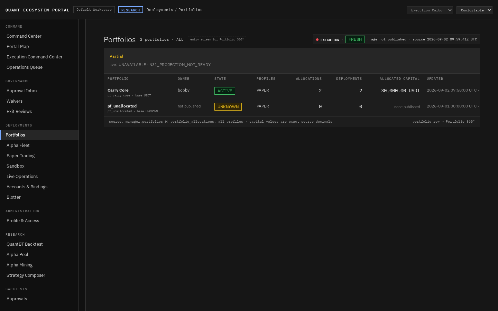

/deployments/portfolios — preview build, 1440px, BFF-double sample data (two portfolios). Switch to “What changes” to see the proposal marked against it.Portfolios
My portfolios
Fresh · as of 12s agoIdentity only · metrics not readyFresh · 9s Environment1 USDT · real-funded23
13
Quick filtersAll 7Needs attention 1Stale 1Sorted by Economic capital ↓ · server-side · unavailable values last4
| Portfolio | Manager | Alphas / deploy. | Allocations | Domain | Economic capital ⇩ ⇅ | Allocated capital ⇅ | Net PnL · 30D ⇅ | Return · 30D ⇅Modified-Dietz | Drawdown ⇅ | Concentration ⇅11 | Portfolio score ⊘10 | Health · as-of 12 |
|---|---|---|---|---|---|---|---|---|---|---|---|---|
| Core pf_0001 | M. Tran | 4 / 5 | 5Not availableAllocations not published | Real | 612,480.40Not availableSource not qualified | 540,000.00Not availableAllocations not published | +9,310.22Not availableFees & funding not complete | +1.6%Not availableMethod not certified | −1.8% max −3.9%Not availableNeeds NAV series |
0.28Not availableNeeds allocation grouping | Pending | OK · 12sIdentity only |
| Satellite pf_0002 | L. Nguyen | 6 / 8 | 8Not availableAllocations not published | Real | 380,205.00Not availableSource not qualified | 350,000.00Not availableAllocations not published | +33,420.10Not availableFees & funding not complete | +9.7%Not availableMethod not certified | −4.2% max −6.8%Not availableNeeds NAV series |
0.31Not availableNeeds allocation grouping | Pending | Pending recallIdentity only |
| Canary pf_0003 | L. Nguyen | 3 / 3 | 3Not availableAllocations not published | Real | 256,000.00Not availableSource not qualified | 240,000.00Not availableAllocations not published | −1,540.00Not availableFees & funding not complete | −0.6%Not availableMethod not certified | −2.9% max −3.4%Not availableNeeds NAV series |
0.52Not availableNeeds allocation grouping | Pending | OK · 9sIdentity only |
| Hedge pf_0004 | P. Okafor | 4 / 6 | 6Not availableAllocations not published | Real | 188,640.75Not availableSource not qualified | 170,000.00Not availableAllocations not published | +2,310.40Not availableFees & funding not complete | +1.2%Not availableMethod not certified | −1.1% max −2.0%Not availableNeeds NAV series |
0.24Not availableNeeds allocation grouping | Pending | Stale 14mIdentity only |
| Basis-Arb pf_0005 | P. Okafor | 2 / 2 | 2Not availableAllocations not published | Real | 96,000.00Not availableSource not qualified | 90,000.00Not availableAllocations not published | Not availableFees incomplete | Not availableFees incomplete | −0.8% max −1.3%Not availableNeeds NAV series |
Not availableGrouping incomplete | Pending | Partial · feesIdentity only |
| Pilot pf_0006 | M. Tran | 1 / 1 | 1Not availableAllocations not published | Real | 40,000.00Not availableSource not qualified | 35,000.00Not availableAllocations not published | +610.00Not availableFees & funding not complete | +1.5%Not availableMethod not certified | −0.4% max −0.9%Not availableNeeds NAV series |
1.00Not availableNeeds allocation grouping | Pending | OK · 15sIdentity only |
| Unallocated pf_unallocated | Not published | 0 / 0 | 0 | Not published | None published | None published | Not availableNot published | Not availableNot published | Not availableNot published | Not availableNot published | Pending | Unknown |
| Filtered set · economic capital (USDT · Live) | 1,573,326.15 | Other columns are not summed: windows, methods and denominators differ per row. “Unallocated” has no published capital and is not in this total. | ||||||||||
7 rows on this basis (6 portfolios and the Unallocated bucket) · 3 other authorized portfolios use another currency — switch basis to see them. They are never converted or added. (i) Source 5
Core pf_0001
M. Tran · 4 alphas · 5 deployments · Real-funded
OK · 12sIdentity onlyM. Tran · 4 alphas · 5 deployments · Real-funded
Economic capital · USDT
612,480.40Not availableSource not qualified
612,480.40Not availableSource not qualified
Allocated capital · 5 allocations
540,000.00Not availableAllocations not published
540,000.00Not availableAllocations not published
Net PnL · 30D
+9,310.22Not availableFees & funding not complete
+9,310.22Not availableFees & funding not complete
Return · 30D
+1.6%Not availableMethod not certified
+1.6%Not availableMethod not certified
Drawdown
−1.8%Not availableNeeds NAV series
−1.8%Not availableNeeds NAV series
Satellite pf_0002
L. Nguyen · 6 alphas · 8 deployments · Real-funded
Pending recallIdentity onlyL. Nguyen · 6 alphas · 8 deployments · Real-funded
Economic capital · USDT
380,205.00Not availableSource not qualified
380,205.00Not availableSource not qualified
Allocated capital · 8 allocations
350,000.00Not availableAllocations not published
350,000.00Not availableAllocations not published
Net PnL · 30D
+33,420.10Not availableFees & funding not complete
+33,420.10Not availableFees & funding not complete
Return · 30D
+9.7%Not availableMethod not certified
+9.7%Not availableMethod not certified
Drawdown
−4.2%Not availableNeeds NAV series
−4.2%Not availableNeeds NAV series
Canary pf_0003
L. Nguyen · 3 alphas · 3 deployments · Real-funded
OK · 9sIdentity onlyL. Nguyen · 3 alphas · 3 deployments · Real-funded
Economic capital · USDT
256,000.00Not availableSource not qualified
256,000.00Not availableSource not qualified
Allocated capital · 3 allocations
240,000.00Not availableAllocations not published
240,000.00Not availableAllocations not published
Net PnL · 30D
−1,540.00Not availableFees & funding not complete
−1,540.00Not availableFees & funding not complete
Return · 30D
−0.6%Not availableMethod not certified
−0.6%Not availableMethod not certified
Drawdown
−2.9%Not availableNeeds NAV series
−2.9%Not availableNeeds NAV series
Hedge pf_0004
P. Okafor · 4 alphas · 6 deployments · Real-funded
Stale 14mIdentity onlyP. Okafor · 4 alphas · 6 deployments · Real-funded
Economic capital · USDT
188,640.75Not availableSource not qualified
188,640.75Not availableSource not qualified
Allocated capital · 6 allocations
170,000.00Not availableAllocations not published
170,000.00Not availableAllocations not published
Net PnL · 30D
+2,310.40Not availableFees & funding not complete
+2,310.40Not availableFees & funding not complete
Return · 30D
+1.2%Not availableMethod not certified
+1.2%Not availableMethod not certified
Drawdown
−1.1%Not availableNeeds NAV series
−1.1%Not availableNeeds NAV series
Basis-Arb pf_0005
P. Okafor · 2 alphas · 2 deployments · Real-funded
Partial · feesIdentity onlyP. Okafor · 2 alphas · 2 deployments · Real-funded
Economic capital · USDT
96,000.00Not availableSource not qualified
96,000.00Not availableSource not qualified
Allocated capital · 2 allocations
90,000.00Not availableAllocations not published
90,000.00Not availableAllocations not published
Net PnL · 30D
Not availableFees incomplete
Not availableFees incomplete
Return · 30D
Not availableFees incomplete
Not availableFees incomplete
Drawdown
−0.8%Not availableNeeds NAV series
−0.8%Not availableNeeds NAV series
Pilot pf_0006
M. Tran · 1 alpha · 1 deployment · Real-funded
OK · 15sIdentity onlyM. Tran · 1 alpha · 1 deployment · Real-funded
Economic capital · USDT
40,000.00Not availableSource not qualified
40,000.00Not availableSource not qualified
Allocated capital · 1 allocations
35,000.00Not availableAllocations not published
35,000.00Not availableAllocations not published
Net PnL · 30D
+610.00Not availableFees & funding not complete
+610.00Not availableFees & funding not complete
Return · 30D
+1.5%Not availableMethod not certified
+1.5%Not availableMethod not certified
Drawdown
−0.4%Not availableNeeds NAV series
−0.4%Not availableNeeds NAV series
Unallocated pf_unallocated
Owner not published · 0 allocations · 0 deployments
UnknownOwner not published · 0 allocations · 0 deployments
Economic capital · USDT
None published
None published
Allocated capital
None published
None published
| Portfolio | My alphas | My allocation · USDT | My net PnL · 30D | My deployments |
|---|---|---|---|---|
| Core pf_0001 | 1 | 200,000.00 | +5,420.10 | OK |
Your slice only. No portfolio total, no peer list, no ranking, no count of portfolios you cannot see. 7
Column chooser open state 8
Sparkline stays disabled until a manager time-series read exists (FE-013). Defaults = 13 columns; the rest are opt-in.
Sort and comparability rules what the header may offer 9
| Column | Sort | Rule |
|---|---|---|
| Portfolio, Manager | Yes | Lexical on the stable name; ID breaks ties. |
| Allocations, Capital, Allocated capital, PnL, Drawdown | Yes | Only inside the selected currency basis and window; header shows both. “None published” sorts last. |
| Return | Yes | Window must be selected; method label Modified-Dietz stays in the header. |
| Concentration | Yes | Unitless HHI; rows with incomplete grouping sort last. |
| Portfolio / Alpha score | No | Policy pending: every value is null, so a sort would be noise (FE-011). |
| Domain, Health | Filter | Categories, not magnitudes. |
What changes vs today — Portfolios Directory (/deployments/portfolios)
| Region | Today (V1, from the screenshot) | Proposed | Why · needs backend | |
|---|---|---|---|---|
| KEPT | Route, row click, freshness chip | /deployments/portfolios; a row opens Portfolio 360°; “FRESH” chip | Same route; row still opens Portfolio 360 and keeps the query | Works today. The chip drops the raw source timestamp. |
| KEPT | Allocations and Allocated capital columns | Allocations count, Deployments count and Allocated capital (30,000.00 USDT) | Same three figures stay as default columns (Alphas / deploy., Allocations, Allocated capital) | Today’s numbers are still the budget view a manager checks first. |
| KEPT | Unallocated bucket row and its wording | pf_unallocated: owner “not published”, state UNKNOWN, capital “none published” | Same row and same honest wording (“Not published”, “None published”); left out of the capital total | Never shown as 0 or a dash. |
| KEPT | Exact decimals | Capital shown as exact source decimals, never k/M | Same: numbers are exact, mono, no abbreviation | Existing rule is right. |
| CHANGED | Header scope | “2 portfolios · ALL” — one list mixes profiles; no window | Environment is required (Live / Paper / Sandbox), plus window and a currency basis chip | No cross-environment “All”. Needs the directory read (FE-014) and a basis field. |
| CHANGED | Other columns | Portfolio·ID·base, Owner, State chip, Profiles, Updated | Adds Economic capital, Net PnL, Return, Drawdown, Concentration, Portfolio score; Owner becomes Manager; State, Profiles and Updated fold into Domain and Health·as-of | Needs NAV, PnL, return and HHI per portfolio. 13 default columns scroll sideways on narrow screens. |
| NEW | Search, filters, column chooser, sort, quick filters | None; the list is unsorted and unfiltered | Search, Manager/Health/Domain filters, Columns, Compact, sort caption | Sort is server-side, nulls last; search needs FE-008. Scores cannot be sorted (policy pending, FE-011). |
| CHANGED | Missing-data wording | Banner “Partial · live: UNAVAILABLE · N31_PROJECTION_NOT_READY” | Plain banner; “Not available” plus a short reason; today’s “None published” kept where the source says so | Needs the public copy dictionary (FE-015). Never 0 or a dash for missing numbers. |
| CHANGED | Footer | “source: manager.portfolios ⋈ portfolio_allocations … exact source decimals” | “7 rows on this basis”, capital total of the filtered set, (i) Source | Honest counts without leaking hidden portfolios. |
| NEW | Mobile card list | No 660px layout | One card per portfolio at 660px and below | UXM-00 §5: 660 is not a checkpoint today. |